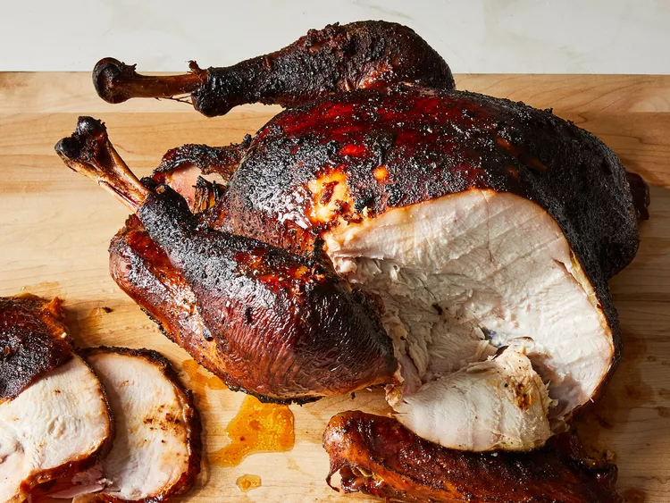

Turkey in a Smoker Recipe
Smoking a turkey results in an aromatic bird with a delicate, smoky flavor and a beautifully tender and juicy texture. Learn how to smoke a turkey, and get our best seasoning and storage tips, right here.

How to Smoke a Turkey?
It's easier than you think to make a perfectly smoked turkey. You'll find the full, step-by-step recipe below — but here's a brief overview of what you can expect:
- Rub Turkey: Pat turkey dry with paper towels. Rub the entire turkey with crushed garlic, then sprinkle with salt and pepper. Place the turkey in an aluminum roasting pan.
- Stuff the Turkey: (Note: The turkey should already be clean, with the neck and giblets removed). Stuff the hollowed cavity with butter, cola, apple, onion, garlic powder, salt, and pepper. Cover the seasoned and stuffed turkey loosely with foil.
- Smoke the Turkey: Add wood chips to the smoker according to the manufacturer's directions and place the covered turkey in the pre-heated smoker. Smoke the turkey, basting regularly, until the juices run clear and the meat is no longer pink at the bone.
Ingredients
- 1 (10 pound) whole turkey, neck and giblets removed
- 4 cloves garlic, crushed
- 2 tablespoons seasoned salt
- ½ cup butter
- 2 (12 fluid ounce) cans cola-flavored carbonated beverage
- 1 medium apple, quartered
- 1 medium onion, quartered
- 1 tablespoon garlic powder
- 1 tablespoon salt
- 1 tablespoon ground black pepper
- 2 cups hickory wood chips, or more as needed (Optional)
Directions
- Step 1: Preheat a smoker to 225 to 250 degrees F (110 to 120 degrees C).
- Step 2: Rinse turkey under cold water, and pat dry.
- STep 3: Rub crushed garlic over the outside of the turkey, and sprinkle with seasoned salt. Transfer to a disposable roasting pan.
- Step 4: Fill the turkey cavity with butter, cola, apple, onion, garlic powder, salt, and pepper. Cover turkey loosely with foil.
- Step 5: Add wood chips to the smoker according to the manufacturer's directions. Place the roasting pan in the preheated smoker. Smoke the turkey, basting every 1 to 2 hours with juices from the bottom of the roasting pan, for 5 hours.
- Step 6: Add more wood chips if desired. Continue smoking and basting, until turkey is no longer pink at the bone and the juices run clear, about 5 more hours. An instant-read thermometer inserted into the thickest part of the thigh, near the bone, should read 180 degrees F (80 degrees C).